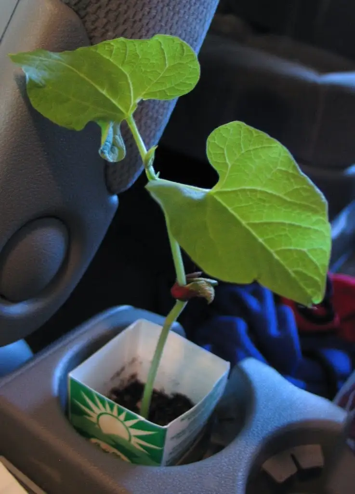

Once upon a time, in a minivan far away, there was a boy, age seven, who wasn’t having his best school year, but not his worst one either. Everything was just so-so. Boring is one of the words he would use to describe most of his days.
But this isn’t really his story. It’s the story of a bean that he planted in a cut-up milk cartoon one day at school, and how he brought it to his mother after school, in the minivan, and said, “Here’s my bean plant. It’s kinda dumb.”
His mother looked at the beanstalk. She didn’t think it was dumb at all, though it did look pretty scrawny. It would have been so easy for her to toss it out, along with the myriad papers that had come home from school each week; the ones that get a quick once-over and are then sent to the refuse pile, along with the other worksheets that have outworn their usefulness.
She put the plant in one of the cup holders inside the minivan, not sure what really should be done about it. She noticed some old water in a water bottle from two soccer games ago and thought, “Why not?” So she watered the bean plant. “You never know — something might happen,” she said to herself. But truthfully, she had very few expectations, and didn’t really expect the plant to live.
The mom forgot about the tiny, shriveled beanstalk for a few days. Life went on, busy as ever, and many things were passed around in that van, from soccer shoes and lollipops from the bank to gym bags and more papers. The plant had mostly been forgotten about. But then, nearly by accident, she happened to look down at it one afternoon while looking for a pen, and she noticed that that shriveled up plant had changed. It now had a spark of life within it, and it had grown. Despite its imperfect environment of a noisy, busy minivan, the beanstalk seemed to be saying to her, “Look, I’m not dead. I’m not dead at all. I’m alive!”

The mother smiled. She found some more old water from another container in the van. She watered the beanstalk again. The next day, it had grown even higher, and the bend in its middle had all but disappeared. The bean in its center, the seed that had started the whole thing, clung furiously to the stalk, a reminder, it seemed to her, of how far the beanstalk had come.
{kind=link}
She looked at the plant again, amazed at the analogies forming in her mind. She thought of her own life and the points at which she’d wanted to give up on herself, and how, with just a little water, sunlight and the right temperature, she began to push up through the earth and open to the sun. She thought, too, of her children, and how little it takes, really, for them to thrive. Just someone to believe in them, to offer a kind word was really all they needed most days. She thought of everyone with whom she had come into contact, people on the verge of losing hope, and it gave her renewed hope, this green plant that once seemed in a stance of despair, to be reminded of how little it takes to nudge something into new life.
“This is a story about survival,” she said out loud to herself. She smiled at the plant, whispering a thanks for all it had taught her. She chuckled, too, at its persistence, at how it had not wanted to give up, even when a few voices thought it should. And she knew, without a doubt, that if she were to continue to water that plant, transfer it to the right soil, keep orienting it to sunshine, it eventually would grow all the way up into and past the clouds and into life everlasting.
The End.
Q4U: What have you helped thrive this week?